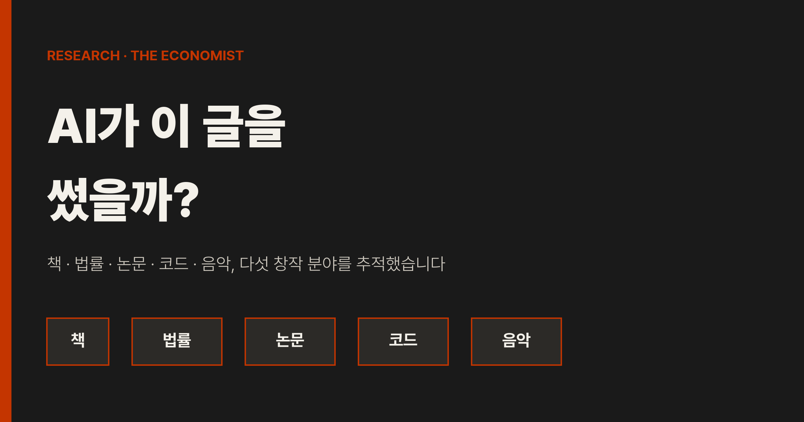
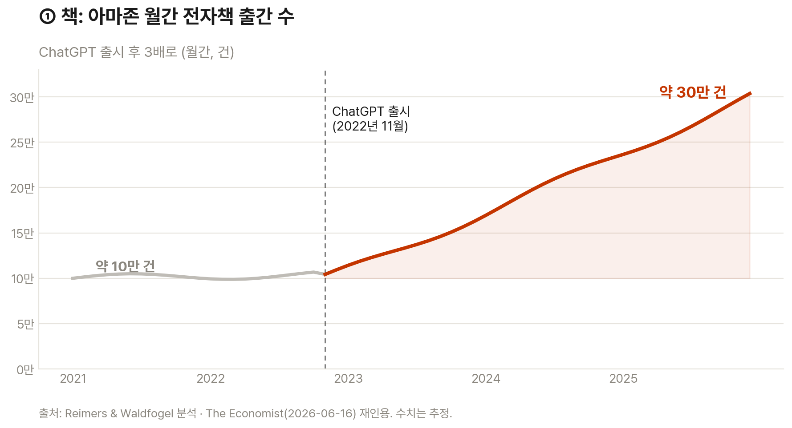
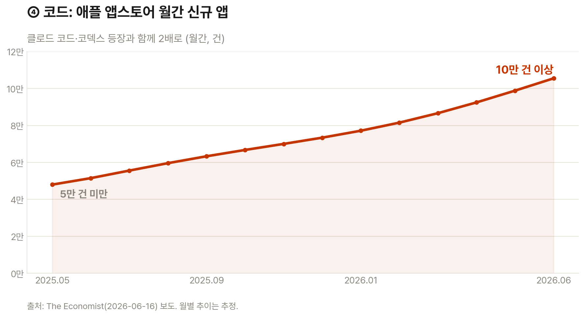
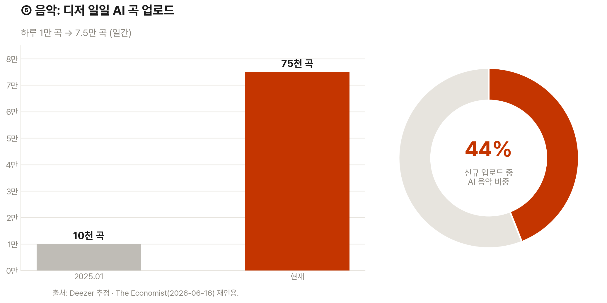
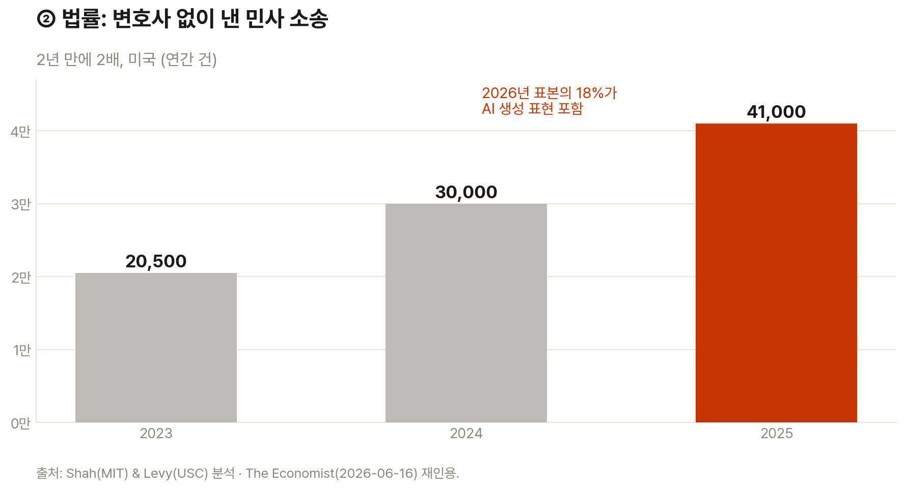
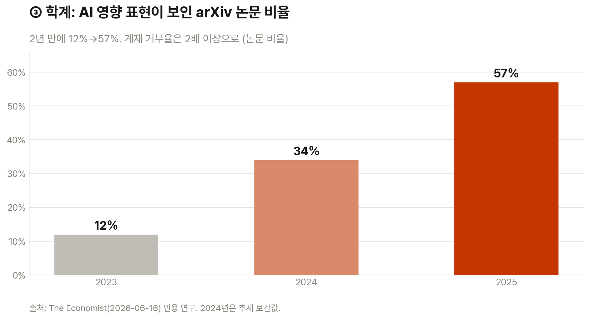

이코노미스트가 책·법률·논문·코드·음악 다섯 분야에서 AI 콘텐츠를 추적했습니다. 모두 같은 곡선을 그립니다.
생산량은 크게 늘었습니다. 아마존 전자책은 월 30만 건, 디저 신규 곡의 44%가 AI 음악입니다.
양이 늘면 값이 떨어집니다. 병목은 생산에서 검증으로 옮겨가고, 남는 경쟁력은 신뢰입니다.
AI로 산출물을
10배 더 찍어내셨습니까?
바로 그래서 모든 산출물의 값이 함께 떨어집니다.
지난 분기 AI 도입 보고서에 "산출물 3배"라고 쓰셨습니까? 많은 리더가 AI의 성과를 산출량으로 잽니다. 보고서가 늘고 코드가 늘면 성공처럼 보입니다.
그런데 이코노미스트가 다섯 분야를 추적해 보니 결론이 달랐습니다. 모두가 더 많이 만들 수 있게 되자, 더 많이 만드는 일 자체의 값이 떨어졌습니다.
이 글은 AI로 생산을 늘리려는 리더를 위한 것입니다. 늘어난 양이 왜 경쟁력이 아닌지, 그리고 무엇이 새 경쟁력인지 다룹니다.
프롬프트 한 줄이면 누구나 글, 코드, 음악을 만듭니다. 창작의 문턱이 사라졌습니다. 이른바 'AI 슬롭'이 인터넷을 덮는다는 우려가 커집니다.
이코노미스트는 그 우려가 실제인지 다섯 분야의 데이터로 확인했습니다. 책, 법률 문서, 학술 논문, 앱, 음악입니다. 다섯 곳 모두에서 생산량이 같은 모양으로 치솟았습니다.
이 변화는 리더의 평가 기준에 직접 닿습니다. 양이 흔해지면 양으로 매기던 점수는 의미를 잃습니다. 시장은 흔해진 것의 값을 빠르게 깎습니다.
첫째, 다섯 분야가 똑같은 곡선을 그립니다. 책부터 음악까지 생산량이 한 방향으로 치솟았습니다. 아마존 전자책은 월 30만 건으로, ChatGPT 출시 전의 3배입니다. AI 탐지 도구로 보면 늘어난 분량 대부분이 챗봇 작성이었습니다. 애플 앱스토어 신규 앱도 클로드 코드, 코덱스 같은 코딩 에이전트 등장과 함께 월 10만 건을 넘었습니다.


| 분야 | 지표 | 이전 | 현재 |
|---|---|---|---|
| 책 | 아마존 월간 전자책 | 약 10만 건 | 약 30만 건 |
| 법률 | 변호사 없는 민사 소송(美, 연간) | 2만여 건 (2023) | 41,000건 (2025) |
| 논문 | AI 표현 보인 arXiv 논문 | 12% (2023) | 57% (2025) |
| 코드 | 애플 앱스토어 월간 신규 앱 | 5만 건 미만 (2025.5) | 10만 건 이상 |
| 음악 | 디저 일일 AI 곡 업로드 | 1만 곡 (2025.1) | 7.5만 곡 |
둘째, 양이 늘면 값이 떨어집니다. 디저는 하루 7.5만 곡의 AI 음악이 올라온다고 봤습니다. 2025년 1월 1만 곡에서 크게 뛰었습니다. 신규 업로드의 44%가 AI 음악입니다. 설문에서 97%가 AI와 사람 음악을 구분하지 못했습니다. 그런데도 사람들은 사람의 손길을 선호한다고 답합니다. 실제로 AI가 쓴 듯한 책은 아마존에서 리뷰가 더 적고 더 나쁩니다.
이것이 핵심입니다. 만들기 쉬워진 것은 흔해지고, 흔해진 것은 값이 떨어집니다. 이코노미스트는 양 자체가 모든 콘텐츠의 가치를 낮출 수 있다고 봤습니다.

셋째, 병목이 생산에서 검증으로 옮겨갑니다. 변호사 없이 낸 미국 민사 소송은 2년 만에 41,000건으로 2배가 됐습니다. 2026년 표본 1,600건 중 18%에 AI 생성 표현이 있었습니다. 성공률은 그대로지만 법원은 밀려드는 소송에 막힙니다. 학계도 같습니다. arXiv 논문의 AI 표현 비율은 2023년 12%에서 2025년 57%로 뛰었습니다. 게재 거부율은 2배 이상으로 올랐습니다. 동료 심사 체계가 비명을 지릅니다.
회사도 다르지 않습니다. 팀이 산출물을 10배 찍어내면, 막히는 곳은 생산이 아니라 검토입니다. 누가 그 많은 결과물을 읽고 책임질지가 새 병목입니다.


넷째, 사람은 못 알아채도 신뢰는 기억합니다. 블라인드 테스트에서 사람들은 종종 AI 글을 사람 글보다 선호했습니다. 이코노미스트 칼럼니스트도 동료를 속였습니다. 그런데 출처를 알면 평가가 달라집니다. AI 작성으로 보이는 책은 리뷰가 더 박합니다. 품질을 못 가려도, 누가 만들고 누가 책임지는지는 따집니다. 회사도 같습니다. 고객은 AI가 쓴 제안서인지 못 가려도, 책임자 이름이 붙은 산출물을 더 신뢰합니다. 남는 경쟁력은 양이 아니라 신뢰와 출처입니다.
보고서 건수, 코드 줄 수, 콘텐츠 개수는 이제 거의 공짜입니다. 채택률, 재사용 횟수, 검증 통과율로 평가 기준을 바꾸십시오. (1시간)
우리 팀이 지금 산출물을 평가하는 지표를 모두 적어 주세요. 각 지표가 '생산량'을 재는지 '가치·검증'을 재는지 분류해 주세요. 양을 재던 지표를 채택률, 재사용, 오류율 같은 가치 지표로 바꾸는 안을 표로 제안해 주세요.
생산을 10배 늘리면 막히는 곳은 검토입니다. 법원과 학술지가 그랬습니다. 누가 무엇을 어떤 기준으로 검증하는지부터 정하고, 검토 단계를 자동화하거나 인력을 보강하십시오. (1시간)
사람은 AI 글을 잘 못 가리지만 출처는 따집니다. AI가 도운 결과물에 작성·검증 흔적과 책임자를 표시하는 절차를 만드십시오. 신뢰가 흔해진 양과 당신을 구분해 줍니다. (30분)
AI 탐지에 의존한 수치입니다. 분량 증가와 비율은 AI 탐지 도구 추정입니다. 탐지는 오탐과 누락이 있습니다. 경향으로만 읽으십시오.
'AI 표현'은 작성 주체가 아닙니다. arXiv 57%는 AI가 다 썼다는 뜻이 아닙니다. AI 다듬기를 거친 문장까지 포함합니다. 도움과 대필을 구분해야 합니다.
양과 질은 별개입니다. 생산량이 늘었다고 가치가 반드시 떨어지지는 않습니다. 같은 도구로 더 나은 결과를 내는 팀도 있습니다.
분야별 맥락이 다릅니다. 음악, 법률, 학술의 평가 방식은 제각각입니다. 우리 업무에 그대로 대입하지 말고 기준을 다시 세우십시오.
AI는 만드는 일을 흔하게 만들었습니다. 그래서 경쟁력은 양에서 검증과 신뢰로 옮겨갑니다. 양을 재던 지표를 버리고, 검토 병목과 출처 관리를 먼저 챙기십시오.
AI 슬롭(AI slop): 적은 노력으로 대량 생산된 저품질 AI 콘텐츠를 가리키는 말입니다. 인터넷에 넘쳐 흐른다는 우려에서 나왔습니다.
바이브 코딩(vibe coding): 코딩을 모르는 사람이 자연어 지시로 소프트웨어를 만드는 방식입니다. 코딩 에이전트가 코드를 대신 작성합니다.
본인 소송(pro se): 변호사를 선임하지 않고 당사자가 직접 진행하는 소송입니다. AI 도움으로 직접 소장을 쓰는 사례가 늘었습니다.
프리프린트(preprint): 동료 심사를 거치기 전에 공개하는 논문 초고입니다. arXiv가 대표적인 공유 서버입니다.
블라인드 테스트(blind test): 출처를 가린 채 결과물만 비교 평가하는 실험입니다. AI와 사람 작성물을 구분하는지 확인합니다.
- The Economist. (2026, June). Did AI write this article? [Article]. The Economist. (원문 보기 ↗)
- Reimers, I., & Waldfogel, J. (2026). AI and the supply of e-books on Amazon [Working paper]. Cornell University & University of Minnesota. (The Economist 재인용)
- Shah, A., & Levy, J. (2026). Pro se litigation and AI-assisted filings [Working paper]. MIT & USC. (The Economist 재인용)
- Deezer. (2026). AI-generated music on streaming platforms [Estimate]. Deezer. (The Economist 재인용)